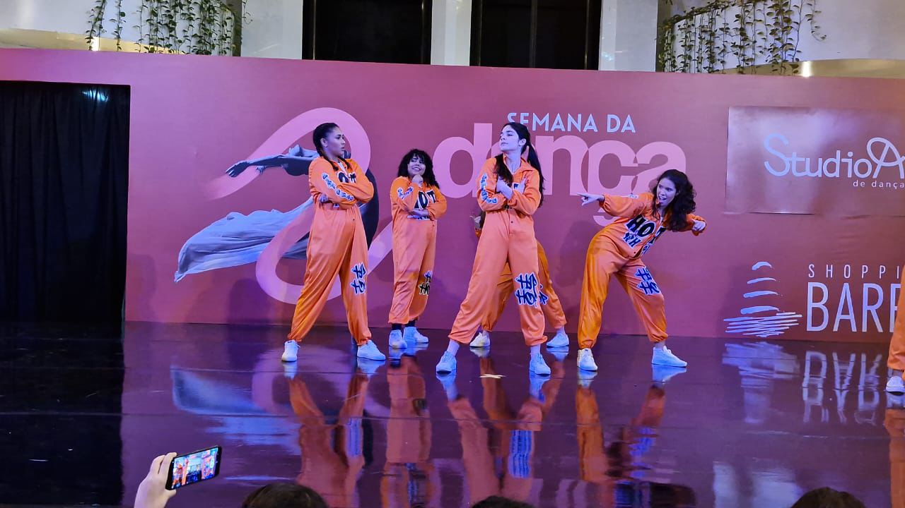
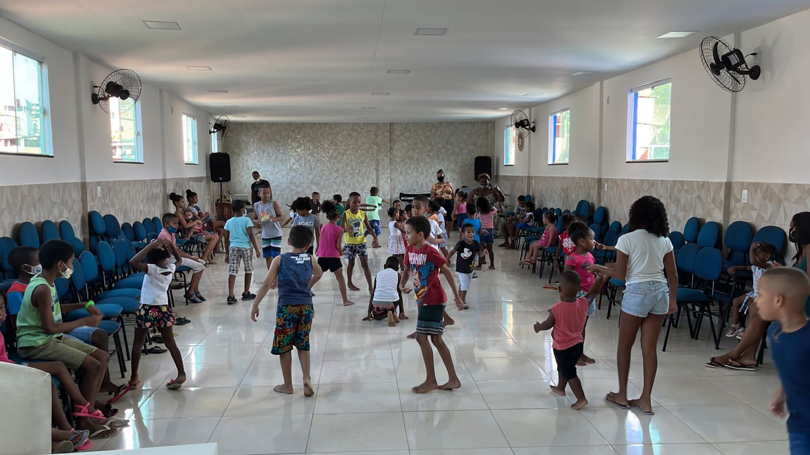
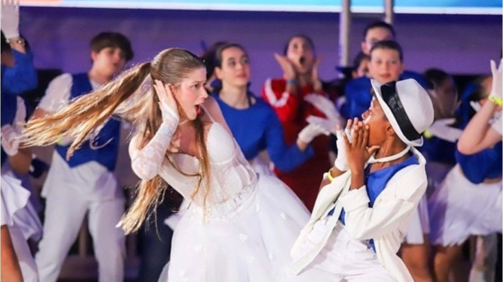

Descubra minha criatividade em ação!
Aqui compartilho projetos que refletem minha paixão pela arte, dança e iniciativas sociais e colaborativas. Cada trabalho é uma expressão do meu desejo de conectar pessoas, criar impacto e explorar diferentes formas de expressão. São projetos pessoais que combinam criatividade, ação social e a busca por novas possibilidades.
Compartilhando a Cultura da Dança
Durante o mês da dança, a escola de dança à qual faço parte é convidada anualmente para apresentar coreografias de sala e performances de festivais passados em um shopping de grande fluxo em Salvador. Sempre faço questão de participar, pois, além de ser apaixonada por essa arte, acredito que essas apresentações são um importante passo para democratizar a dança na cidade, tornando-a acessível a um público mais amplo.
Doações e Diversão: Pelas Crianças
O projeto envolve a arrecadação de doações de alimentos e itens de higiene, seguidas de pequenas reformas em creches para melhorar o ambiente das crianças. Além disso, organizamos uma tarde de recreação, com atividades lúdicas e educativas, para promover o bem-estar e a diversão dos pequenos.
Liderança e Criatividade na Dança
Após abraçar desafios no mundo da dança, meu trabalho foi reconhecido e passei a coreografar performances com mais de 100 adolescentes. Como responsável pela direção da dança, estive envolvida desde a construção do roteiro e das coreografias até a criação das dinâmicas, além de coordenar a seleção de áudio, iluminação e figurino, cuidando para que cada elemento contribuísse para uma apresentação coesa e impactante.
colocar minha participaçao na MFP e na OBI, colocar jogo da velha, colocar o netflix
ofvneoifnvoiernsornsorngourtnjjnerifnesoubbuigbibhehbt
ofvneoifnvoiernsornsorngourtnjjnerifnesoubbuigbibhehbt
ofvneoifnvoiernsornsorngourtnjjnerifnesoubbuigbibhehbt
ofvneoifnvoiernsornsorngourtnjjnerifnesoubbuigbibhehbt
ofvneoifnvoiernsornsorngourtnjjnerifnesoubbuigbibhehbt